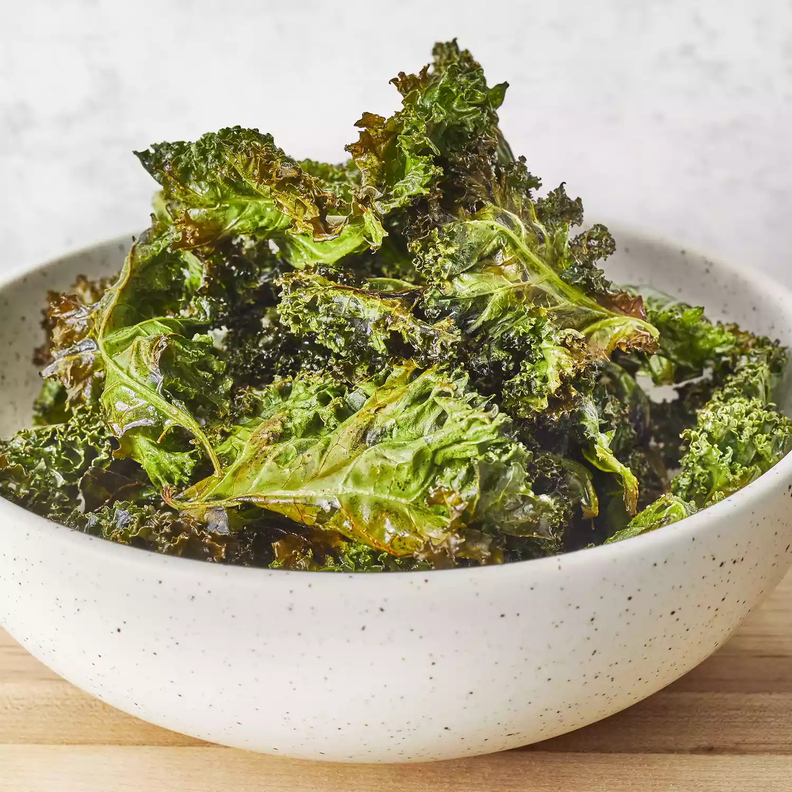

Baked Kale Chips

Description
These crispy oven-baked kale chips are a great homemade snack. You cannot stop at just eating one, just like potato chips. Great for parties, too.
Ingredients
- 1 bunch Kale
- 1 tablespoon Olive oil
- 1 teaspoon flaked sea salt
Steps
- Preheat an oven to 300 degrees F (150 degrees C). Line a rimmed baking sheet with parchment paper.
- With a knife or kitchen shears carefully remove kale leaves from the thick stems and tear into bite size pieces. Wash and thoroughly dry kale with a salad spinner. Drizzle kale leaves with olive oil and toss to combine. Spread out in an even layer on the baking sheet without overlapping and sprinkle with salt.
- Bake until the edges start to brown but are not burnt, 20 to 30 minutes.
Note: Recipe has been copied from Allrecipes.com for academic purposes.